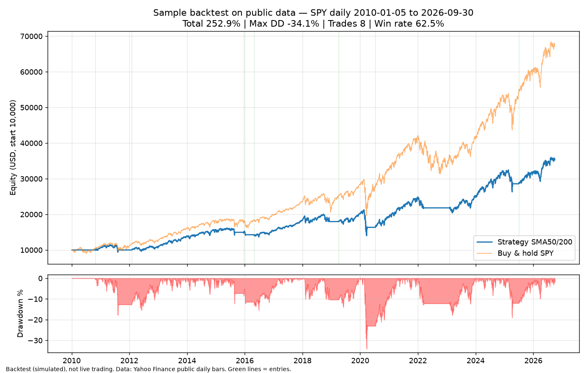

Sample backtest on public data
A small example of the kind of output the engine produces: equity curve, drawdown, trade log, tied out to the cent.

- Data: SPY daily bars from Yahoo Finance (split-adjusted, dividends excluded), 2010-01-05 to 2026-09-30.
- Rule: long-only SMA50/SMA200 crossover, fills at the next day's open, 0.05% cost per side, starting equity USD 10,000.
- Result: total return +252.9% (CAGR 7.83%), max drawdown -34.1%, 8 trades, win rate 62.5% (the last trade is still open, marked at the 2026-09-30 close).
- Buy & hold over the same period: +571.2%. This simple rule trails it, and the report shows that honestly. That is the point of a backtester.
- Check: the 8 trade P&Ls sum exactly to ending equity minus 10,000, and each "equity after" value below is the curve's value on that day.
| Entry | Entry px | Exit | Exit px | P&L (USD) | Return | Equity after |
|---|---|---|---|---|---|---|
| 2010-10-25 | 119.1996 | 2011-08-15 | 119.1304 | -5.8 | -0.06% | 9994.2 |
| 2012-02-01 | 132.3561 | 2015-08-31 | 198.0109 | 4957.59 | 49.6% | 14951.79 |
| 2015-12-18 | 202.8714 | 2016-01-12 | 193.7231 | -674.24 | -4.51% | 14277.55 |
| 2016-04-26 | 209.1445 | 2018-12-10 | 263.2383 | 3692.79 | 25.86% | 17970.34 |
| 2019-04-02 | 286.183 | 2020-03-31 | 260.4297 | -1617.13 | -9.0% | 16353.21 |
| 2020-07-10 | 314.4672 | 2022-03-15 | 419.5601 | 5465.14 | 33.42% | 21818.35 |
| 2023-02-03 | 411.7958 | 2025-04-15 | 539.4001 | 6760.91 | 30.99% | 28579.26 |
| 2025-07-02 | 617.5486 | 2026-09-30 (open, marked) | 762.63 | 6714.16 | 23.49% | 35293.42 |
Simulated backtest, not live trading, on public data with a generic textbook rule. Your own rules would sit in a config file, and the same kind of report would be generated for them. Source code is delivered after the first milestone is funded.